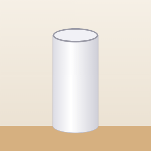
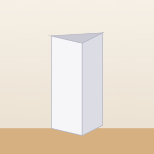
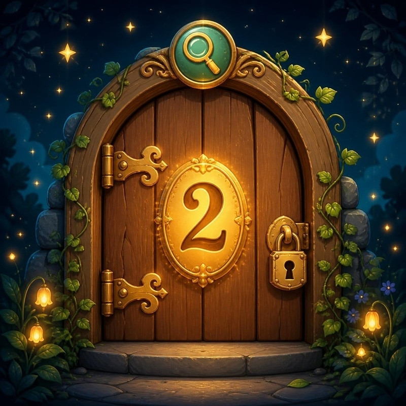
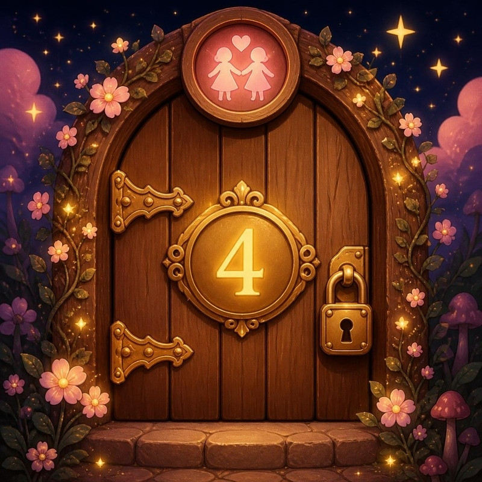

🔐 5번 방 · 직접 만들고 개선하기24차시 / 20~24도입

물건 교과서 · 방 탈출 미션
5번 방 · 24차시 · 마지막 미션
튼튼한 물건의
비밀
종이 다리가 공책 몇 권을 버틸까?
🚨 마법사의 마지막 도전장!

MISSION BRIEFING
마지막 미션 세 가지
미션 1
🔺
세모 vs 네모
빨대로 만들고 밀어 봐요
미션 2
🌉
종이 다리 챌린지
공책 몇 권을 버틸까?
미션 3
🔧
더 튼튼하게!
고치고 다시 도전
보상
열쇠 완성
모든 방 탈출!
🎯 학습 목표 종이로 구조물을 만들어 무게를 견디는 정도를 비교하고, 더 튼튼하게 고칠 수 있어요.
MISSION 2
🌉 종이 다리 챌린지
1
책 사이를 20cm로 맞춰요.
2
10분 동안 모둠이 다리를 만들어요.
3
가운데에 공책을 한 권씩 살며시!무너지거나 바닥에 닿기 전까지 버틴 권 수가 기록

병풍 접기접는 선을 다리 방향과 나란히!

둥글게 말기말아서 통을 만들면 단단해요

세모 기둥세 번 접어 세모 통을 만들어요

가장자리 세우기양쪽을 접어 벽을 세워요
🎉 ESCAPE!
5번 방 탈출!
① 재료의 특징을 살펴보면 버려질 물건도 새로운 쓰임이 생겨요.
② 만들기 전에 설계를 하면 재료와 구조를 미리 생각할 수 있어요.
③ 설계도를 보며 차근차근 만들면 생각이 진짜 물건이 돼요.
④ 실패는 더 좋은 방법을 알려 주는 힌트예요.
⑤ 같은 재료도 모양과 구조를 바꾸면 더 튼튼해져요.
ALL ROOMS CLEAR
🏆 물건 비밀 연구소, 모두 탈출!
 1번 방물건과 친해지기
1번 방물건과 친해지기
2번 방물건을 자세히 탐구하기 3번 방생활 속 불편함 해결하기
3번 방생활 속 불편함 해결하기
4번 방모두를 위한 물건 생각하기5번 방직접 만들고 개선하기이제 여러분은 물건 박사 요원! 주변 물건을 보면 비밀을 찾아보세요.